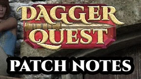

Release 0.3.9
updates
- The Shift key can be used to stop moving, and/or attack in place. This can be rebound in the Settings menu.
- Added tips to the loading screen.
- You can now click any mouse button to progress past the splash screen, in addition to pressing any keyboard button.
- Removed the back button from the Settings menu.
- Added options to bind keys for the Inventory, Equipment, Character and Settings menus, as well as the soon-to-be-added menus for the passive cube and the Pillar of Fate.
- Added a section to the Settings menu to show uneditable keybindings.
- Replaced the cycling ellipses on the splash screen and loading screen with pulsating text.
- The player character lets you know verbally when his or her inventory is full, and when item requirements aren't met.
- Merchants let you know verbally when they can't purchase any more items.
bug fixes
- The "currently equipped" text above the comparison tooltip for currently equipped items was very small.
- The tooltip didn't display properly if an item or piece of loot had more than four mods.
- The splash screen and main menu could be progressed through too quickly before certain content had loaded.
- Text issues on the splash screen.
- Enemy information and item tooltips were briefly visible after entering The Farm.
- The play button on the Main menu could be clicked multiple times.
- The splash screen would fade out at the wrong speed if keys were pressed repeatedly.
- The splash screen could be progressed past before it had finished fading in.
- Parts of the Settings menu could be interacted with while rebinding a key.
- Very long ability descriptions and item mods were displayed incorrectly.
- Loot could drop in unreachable places.
- Loot could still be picked up after the inventory was full.
- Some text on the Settings menu wasn't moving when the Settings menu was moved to a new location, or the screen was resized.
- Tooltips would display for items and loot that were behind menus.